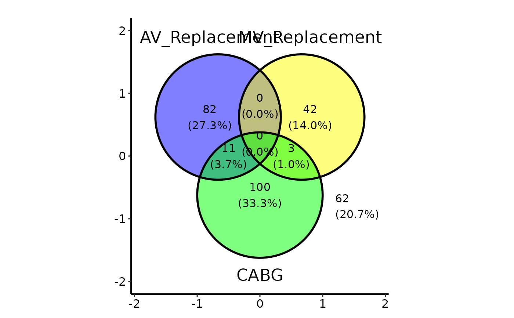

Draws a 2-3 set Venn diagram using ggvenn::ggvenn() and returns a
bare ggplot2 object you can finish with +.
Usage
# S3 method for class 'hv_venn'
plot(
x,
show_percentage = TRUE,
show_counts = TRUE,
fill = NULL,
text_size = 4,
set_name_size = 6,
...
)Arguments
- x
An
hv_vennobject.- show_percentage
Logical; show each region's percentage. Default
TRUE.- show_counts
Logical; show each region's count. Default
TRUE.- fill
Optional vector of fill colours, one per set.
NULL(default) uses ggvenn's palette.- text_size
Region label text size. Default
4.- set_name_size
Set name text size. Default
6.- ...
Forwarded to
ggvenn::ggvenn()for finer styling (unlike mostplot.hv_*methods, which ignore...; ggvenn bakes labels into its geoms, so forwarding is the only way to reach them).
Value
A ggplot object, already styled by
ggvenn and coordinate-free (no axes). Tune it through this
method's arguments (fill, text_size, set_name_size,
...). Do not add an axis-bearing house theme such as
theme_hv_manuscript(): a Venn has no meaningful x/y, and the theme
would paste spurious axes onto it.
Examples
dta <- sample_upset_data(n = 300, seed = 42)
v <- hv_venn(dta, sets = c("AV_Replacement", "MV_Replacement", "CABG"))
plot(v)
